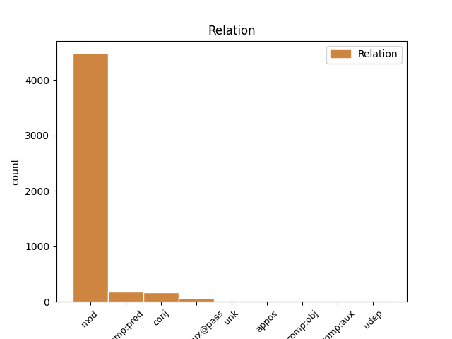
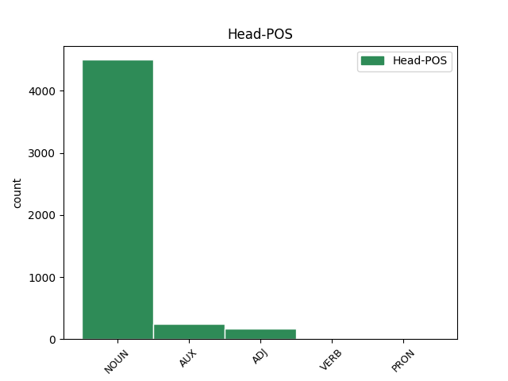
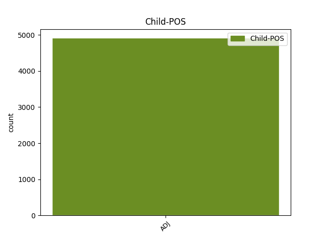

Distribution of features within this leaf



Agreement Rules sorted by frequency.
When the dependent token is None
1 Zrušují _ _ _ _ 0 _ _ _
2 se _ _ _ _ 0 _ _ _
3 1 _ _ _ _ 0 _ _ _
4 . _ _ _ _ 0 _ _ _
5 nařízení _ _ _ _ 0 _ _ _
6 vlády _ _ _ _ 0 _ _ _
7 ČSSR _ _ _ _ 0 _ _ _
8 č._136/1989_Sb. _ _ _ _ 0 _ _ _
9 , _ _ _ _ 0 _ _ _
10 o _ _ _ _ 0 _ _ _
11 informační _ _ _ _ 0 _ _ _
12 soustavě _ _ _ _ 0 _ _ _
13 organizací _ _ _ _ 0 _ _ _
14 , _ _ _ _ 0 _ _ _
15 2 _ _ _ _ 0 _ _ _
16 . _ _ _ _ 0 _ _ _
17 vyhláška _ _ _ _ 0 _ _ _
18 federálního _ _ _ _ 0 _ _ _
19 ministerstva _ _ _ _ 0 _ _ _
20 financí _ _ _ _ 0 _ _ _
21 č._155/1971_Sb. _ _ _ _ 0 _ _ _
22 , _ _ _ _ 0 _ _ _
23 o _ _ _ _ 0 _ _ _
24 inventarizacích _ _ _ _ 0 _ _ _
25 hospodářských _ _ _ _ 0 _ _ _
26 prostředků _ _ _ _ 0 _ _ _
27 , _ _ _ _ 0 _ _ _
28 3 _ _ _ _ 0 _ _ _
29 . _ _ _ _ 0 _ _ _
30 vyhláška _ _ _ _ 0 _ _ _
31 federálního _ _ _ _ 0 _ _ _
32 ministerstva _ _ _ _ 0 _ _ _
33 financí _ _ _ _ 0 _ _ _
34 č._21/1990_Sb. _ _ _ _ 0 _ _ _
35 , _ _ _ _ 0 _ _ _
36 o _ _ _ _ 0 _ _ _
37 kalkulaci _ _ _ _ 0 _ _ _
38 , _ _ _ _ 0 _ _ _
39 4 _ _ _ _ 0 _ _ _
40 . _ _ _ _ 0 _ _ _
41 vyhláška _ _ _ _ 0 _ _ _
42 federálního federální ADJ AANS2----1A---- Case=Gen|Degree=Pos|Gender=Neut|Number=Sing|Polarity=Pos 43 mod _ _
43 ministerstva ministerstvo NOUN NNNS2-----A---- Case=Gen|Gender=Neut|Number=Sing|Polarity=Pos 0 _ _ _
44 financí _ _ _ _ 0 _ _ _
45 č._23/1990_Sb. _ _ _ _ 0 _ _ _
46 , _ _ _ _ 0 _ _ _
47 o _ _ _ _ 0 _ _ _
48 účetnictví _ _ _ _ 0 _ _ _
49 . _ _ _ _ 0 _ _ _
Disagree Examples:
1 (5) _ _ _ _ 0 _ _ _
2 Každá _ _ _ _ 0 _ _ _
3 z _ _ _ _ 0 _ _ _
4 položek _ _ _ _ 0 _ _ _
5 rozvahy _ _ _ _ 0 _ _ _
6 ( _ _ _ _ 0 _ _ _
7 bilance _ _ _ _ 0 _ _ _
8 ) _ _ _ _ 0 _ _ _
9 , _ _ _ _ 0 _ _ _
10 z _ _ _ _ 0 _ _ _
11 položek _ _ _ _ 0 _ _ _
12 výkazu _ _ _ _ 0 _ _ _
13 zisku _ _ _ _ 0 _ _ _
14 a _ _ _ _ 0 _ _ _
15 ztráty _ _ _ _ 0 _ _ _
16 a _ _ _ _ 0 _ _ _
17 z _ _ _ _ 0 _ _ _
18 položek _ _ _ _ 0 _ _ _
19 přehledu _ _ _ _ 0 _ _ _
20 o _ _ _ _ 0 _ _ _
21 změnách _ _ _ _ 0 _ _ _
22 vlastního _ _ _ _ 0 _ _ _
23 kapitálu _ _ _ _ 0 _ _ _
24 obsahuje _ _ _ _ 0 _ _ _
25 též _ _ _ _ 0 _ _ _
26 informaci _ _ _ _ 0 _ _ _
27 o _ _ _ _ 0 _ _ _
28 výši _ _ _ _ 0 _ _ _
29 této _ _ _ _ 0 _ _ _
30 položky _ _ _ _ 0 _ _ _
31 uvedené _ _ _ _ 0 _ _ _
32 za _ _ _ _ 0 _ _ _
33 bezprostředně _ _ _ _ 0 _ _ _
34 předcházející předcházející ADJ AGFP4-----A---- Aspect=Imp|Case=Acc|Gender=Fem|Number=Plur|Polarity=Pos|Tense=Pres|VerbForm=Part|Voice=Act 36 mod _ _
35 účetní _ _ _ _ 0 _ _ _
36 období období NOUN NNNS4-----A---- Case=Acc|Gender=Neut|Number=Sing|Polarity=Pos 0 _ _ _
37 ( _ _ _ _ 0 _ _ _
38 dále _ _ _ _ 0 _ _ _
39 jen _ _ _ _ 0 _ _ _
40 " _ _ _ _ 0 _ _ _
41 minulé_účetní_období _ _ _ _ 0 _ _ _
42 " _ _ _ _ 0 _ _ _
43 ) _ _ _ _ 0 _ _ _
44 . _ _ _ _ 0 _ _ _
1 Položka _ _ _ _ 0 _ _ _
2 " _ _ _ _ 0 _ _ _
3 A._Pohledávky_za_upsaný_základní_kapitál _ _ _ _ 0 _ _ _
4 " _ _ _ _ 0 _ _ _
5 obsahuje _ _ _ _ 0 _ _ _
6 pohledávky pohledávka NOUN NNFP4-----A---- Case=Acc|Gender=Fem|Number=Plur|Polarity=Pos 0 _ _ _
7 za _ _ _ _ 0 _ _ _
8 upisovateli _ _ _ _ 0 _ _ _
9 , _ _ _ _ 0 _ _ _
10 společníky _ _ _ _ 0 _ _ _
11 a _ _ _ _ 0 _ _ _
12 členy _ _ _ _ 0 _ _ _
13 družstva _ _ _ _ 0 _ _ _
14 plynoucí plynoucí ADJ AGFS2-----A---- Aspect=Imp|Case=Gen|Gender=Fem|Number=Sing|Polarity=Pos|Tense=Pres|VerbForm=Part|Voice=Act 6 mod _ _
15 z _ _ _ _ 0 _ _ _
16 povinnosti _ _ _ _ 0 _ _ _
17 splatit _ _ _ _ 0 _ _ _
18 vklad _ _ _ _ 0 _ _ _
19 do _ _ _ _ 0 _ _ _
20 základního _ _ _ _ 0 _ _ _
21 kapitálu _ _ _ _ 0 _ _ _
22 a _ _ _ _ 0 _ _ _
23 upsané _ _ _ _ 0 _ _ _
24 nesplacené _ _ _ _ 0 _ _ _
25 akcie _ _ _ _ 0 _ _ _
26 . _ _ _ _ 0 _ _ _
1 (7) _ _ _ _ 0 _ _ _
2 Položka _ _ _ _ 0 _ _ _
3 " _ _ _ _ 0 _ _ _
4 B.II.2._Stavby _ _ _ _ 0 _ _ _
5 " _ _ _ _ 0 _ _ _
6 a _ _ _ _ 0 _ _ _
7 položka _ _ _ _ 0 _ _ _
8 " _ _ _ _ 0 _ _ _
9 B.II.3._Samostatné_movité_věci_a_soubory_movitých_věcí _ _ _ _ 0 _ _ _
10 " _ _ _ _ 0 _ _ _
11 dále _ _ _ _ 0 _ _ _
12 obsahuje _ _ _ _ 0 _ _ _
13 technické _ _ _ _ 0 _ _ _
14 zhodnocení _ _ _ _ 0 _ _ _
15 a) _ _ _ _ 0 _ _ _
16 k _ _ _ _ 0 _ _ _
17 jehož _ _ _ _ 0 _ _ _
18 účtování _ _ _ _ 0 _ _ _
19 a _ _ _ _ 0 _ _ _
20 odpisování _ _ _ _ 0 _ _ _
21 je být AUX VB-S---3P-AA--- Mood=Ind|Number=Sing|Person=3|Polarity=Pos|Tense=Pres|VerbForm=Fin|Voice=Act 0 _ _ _
22 oprávněna oprávněný ADJ VsQW---XX-AP--- Gender=Fem,Neut|Number=Plur,Sing|Polarity=Pos|Variant=Short|VerbForm=Part|Voice=Pass 21 comp:pred _ LDeriv=oprávnit
23 jiná _ _ _ _ 0 _ _ _
24 účetní _ _ _ _ 0 _ _ _
25 jednotka _ _ _ _ 0 _ _ _
26 než _ _ _ _ 0 _ _ _
27 vlastník _ _ _ _ 0 _ _ _
28 majetku _ _ _ _ 0 _ _ _
29 , _ _ _ _ 0 _ _ _
30 a _ _ _ _ 0 _ _ _
31 to _ _ _ _ 0 _ _ _
32 od _ _ _ _ 0 _ _ _
33 částky _ _ _ _ 0 _ _ _
34 stanovené _ _ _ _ 0 _ _ _
35 zákonem _ _ _ _ 0 _ _ _
36 o _ _ _ _ 0 _ _ _
37 daních _ _ _ _ 0 _ _ _
38 z _ _ _ _ 0 _ _ _
39 příjmů _ _ _ _ 0 _ _ _
40 , _ _ _ _ 0 _ _ _
41 b) _ _ _ _ 0 _ _ _
42 drobného _ _ _ _ 0 _ _ _
43 hmotného _ _ _ _ 0 _ _ _
44 majetku _ _ _ _ 0 _ _ _
45 od _ _ _ _ 0 _ _ _
46 částky _ _ _ _ 0 _ _ _
47 technického _ _ _ _ 0 _ _ _
48 zhodnocení _ _ _ _ 0 _ _ _
49 stanovené _ _ _ _ 0 _ _ _
50 zákonem _ _ _ _ 0 _ _ _
51 o _ _ _ _ 0 _ _ _
52 daních _ _ _ _ 0 _ _ _
53 z _ _ _ _ 0 _ _ _
54 příjmů _ _ _ _ 0 _ _ _
55 . _ _ _ _ 0 _ _ _
1 (10) _ _ _ _ 0 _ _ _
2 Položka _ _ _ _ 0 _ _ _
3 " _ _ _ _ 0 _ _ _
4 B.II.9._Oceňovací_rozdíl_k_nabytému_majetku _ _ _ _ 0 _ _ _
5 " _ _ _ _ 0 _ _ _
6 obsahuje _ _ _ _ 0 _ _ _
7 kladný _ _ _ _ 0 _ _ _
8 ( _ _ _ _ 0 _ _ _
9 aktivní _ _ _ _ 0 _ _ _
10 ) _ _ _ _ 0 _ _ _
11 nebo _ _ _ _ 0 _ _ _
12 záporný _ _ _ _ 0 _ _ _
13 ( _ _ _ _ 0 _ _ _
14 pasivní _ _ _ _ 0 _ _ _
15 ) _ _ _ _ 0 _ _ _
16 rozdíl _ _ _ _ 0 _ _ _
17 mezi _ _ _ _ 0 _ _ _
18 oceněním _ _ _ _ 0 _ _ _
19 podniku _ _ _ _ 0 _ _ _
20 nebo _ _ _ _ 0 _ _ _
21 jeho _ _ _ _ 0 _ _ _
22 části _ _ _ _ 0 _ _ _
23 nabytého _ _ _ _ 0 _ _ _
24 zejména _ _ _ _ 0 _ _ _
25 koupí _ _ _ _ 0 _ _ _
26 , _ _ _ _ 0 _ _ _
27 vkladem _ _ _ _ 0 _ _ _
28 nebo _ _ _ _ 0 _ _ _
29 oceněním _ _ _ _ 0 _ _ _
30 majetku _ _ _ _ 0 _ _ _
31 a _ _ _ _ 0 _ _ _
32 závazků _ _ _ _ 0 _ _ _
33 v _ _ _ _ 0 _ _ _
34 rámci _ _ _ _ 0 _ _ _
35 přeměn _ _ _ _ 0 _ _ _
36 společnosti _ _ _ _ 0 _ _ _
37 a _ _ _ _ 0 _ _ _
38 souhrnem _ _ _ _ 0 _ _ _
39 ocenění _ _ _ _ 0 _ _ _
40 jeho _ _ _ _ 0 _ _ _
41 jednotlivých _ _ _ _ 0 _ _ _
42 složek _ _ _ _ 0 _ _ _
43 majetku _ _ _ _ 0 _ _ _
44 v _ _ _ _ 0 _ _ _
45 účetnictví _ _ _ _ 0 _ _ _
46 účetní _ _ _ _ 0 _ _ _
47 jednotky _ _ _ _ 0 _ _ _
48 prodávající _ _ _ _ 0 _ _ _
49 , _ _ _ _ 0 _ _ _
50 vkládající vkládající ADJ AGMS1-----A---- Animacy=Anim|Aspect=Imp|Case=Nom|Gender=Masc|Number=Sing|Polarity=Pos|Tense=Pres|VerbForm=Part|Voice=Act 0 _ _ _
51 , _ _ _ _ 0 _ _ _
52 zanikající zanikající ADJ AGIP4-----A---- Animacy=Inan|Aspect=Imp|Case=Acc|Gender=Masc|Number=Plur|Polarity=Pos|Tense=Pres|VerbForm=Part|Voice=Act 50 conj _ _
53 nebo _ _ _ _ 0 _ _ _
54 rozdělované _ _ _ _ 0 _ _ _
55 odštěpením _ _ _ _ 0 _ _ _
56 sníženým _ _ _ _ 0 _ _ _
57 o _ _ _ _ 0 _ _ _
58 převzaté _ _ _ _ 0 _ _ _
59 závazky _ _ _ _ 0 _ _ _
60 . _ _ _ _ 0 _ _ _
1 (10) _ _ _ _ 0 _ _ _
2 Položka _ _ _ _ 0 _ _ _
3 " _ _ _ _ 0 _ _ _
4 B.II.9._Oceňovací_rozdíl_k_nabytému_majetku _ _ _ _ 0 _ _ _
5 " _ _ _ _ 0 _ _ _
6 obsahuje _ _ _ _ 0 _ _ _
7 kladný _ _ _ _ 0 _ _ _
8 ( _ _ _ _ 0 _ _ _
9 aktivní _ _ _ _ 0 _ _ _
10 ) _ _ _ _ 0 _ _ _
11 nebo _ _ _ _ 0 _ _ _
12 záporný _ _ _ _ 0 _ _ _
13 ( _ _ _ _ 0 _ _ _
14 pasivní _ _ _ _ 0 _ _ _
15 ) _ _ _ _ 0 _ _ _
16 rozdíl _ _ _ _ 0 _ _ _
17 mezi _ _ _ _ 0 _ _ _
18 oceněním _ _ _ _ 0 _ _ _
19 podniku _ _ _ _ 0 _ _ _
20 nebo _ _ _ _ 0 _ _ _
21 jeho _ _ _ _ 0 _ _ _
22 části _ _ _ _ 0 _ _ _
23 nabytého _ _ _ _ 0 _ _ _
24 zejména _ _ _ _ 0 _ _ _
25 koupí _ _ _ _ 0 _ _ _
26 , _ _ _ _ 0 _ _ _
27 vkladem _ _ _ _ 0 _ _ _
28 nebo _ _ _ _ 0 _ _ _
29 oceněním _ _ _ _ 0 _ _ _
30 majetku _ _ _ _ 0 _ _ _
31 a _ _ _ _ 0 _ _ _
32 závazků _ _ _ _ 0 _ _ _
33 v _ _ _ _ 0 _ _ _
34 rámci _ _ _ _ 0 _ _ _
35 přeměn _ _ _ _ 0 _ _ _
36 společnosti _ _ _ _ 0 _ _ _
37 a _ _ _ _ 0 _ _ _
38 souhrnem _ _ _ _ 0 _ _ _
39 ocenění _ _ _ _ 0 _ _ _
40 jeho _ _ _ _ 0 _ _ _
41 jednotlivých _ _ _ _ 0 _ _ _
42 složek _ _ _ _ 0 _ _ _
43 majetku _ _ _ _ 0 _ _ _
44 v _ _ _ _ 0 _ _ _
45 účetnictví _ _ _ _ 0 _ _ _
46 účetní _ _ _ _ 0 _ _ _
47 jednotky _ _ _ _ 0 _ _ _
48 prodávající _ _ _ _ 0 _ _ _
49 , _ _ _ _ 0 _ _ _
50 vkládající _ _ _ _ 0 _ _ _
51 , _ _ _ _ 0 _ _ _
52 zanikající zanikající ADJ AGIP4-----A---- Animacy=Inan|Aspect=Imp|Case=Acc|Gender=Masc|Number=Plur|Polarity=Pos|Tense=Pres|VerbForm=Part|Voice=Act 0 _ _ _
53 nebo _ _ _ _ 0 _ _ _
54 rozdělované rozdělovaný ADJ AAFS3----1A---- Case=Dat|Degree=Pos|Gender=Fem|Number=Sing|Polarity=Pos 52 conj _ _
55 odštěpením _ _ _ _ 0 _ _ _
56 sníženým _ _ _ _ 0 _ _ _
57 o _ _ _ _ 0 _ _ _
58 převzaté _ _ _ _ 0 _ _ _
59 závazky _ _ _ _ 0 _ _ _
60 . _ _ _ _ 0 _ _ _